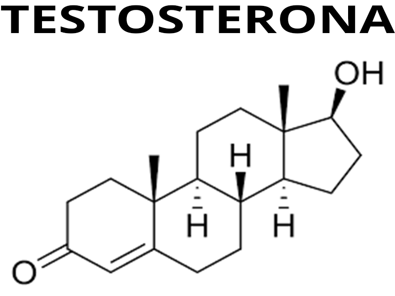

Testosterona
En el ámbito del gimnasio y el desarrollo físico, la testosterona inyectable suele mencionarse como una sustancia asociada al aumento de masa muscular y al rendimiento. Se trata de una versión sintética de la hormona testosterona, administrada mediante inyecciones, que puede generar un entorno anabólico en el cuerpo, favoreciendo la síntesis de proteínas y la recuperación muscular. Dentro del mundo del fitness, algunos usuarios recurren a este tipo de compuestos buscando acelerar resultados como el crecimiento muscular, la reducción de grasa corporal y el aumento de la fuerza. Esto se debe a que la testosterona cumple un rol clave en el desarrollo muscular, la densidad ósea y el rendimiento físico en general. Sin embargo, es importante entender que estos efectos no vienen sin riesgos. El uso de testosterona inyectable sin supervisión médica, algo relativamente común en ciertos entornos de gimnasio, puede provocar consecuencias negativas. Entre ellas se incluyen la supresión de la producción natural de testosterona, alteraciones hormonales, problemas cardiovasculares, daño hepático y efectos secundarios como acné, cambios de humor o ginecomastia (desarrollo de tejido mamario en hombres). Además, muchas veces se utilizan dosis superiores a las terapéuticas, lo que incrementa aún más los riesgos. También es frecuente que se combinen varias sustancias (lo que se conoce como “ciclos”), sin el conocimiento adecuado sobre sus interacciones y efectos a largo plazo. Desde una perspectiva responsable, es fundamental destacar que el progreso físico sostenible se basa en entrenamiento adecuado, nutrición equilibrada y descanso suficiente. La testosterona y otros anabólicos no son atajos seguros, y su uso debería limitarse exclusivamente a contextos médicos donde esté indicado. En resumen, aunque la testosterona inyectable puede tener un impacto significativo en el rendimiento y la apariencia física, su uso en el ámbito del gimnasio con fines estéticos o deportivos implica riesgos importantes que no deben subestimarse. Es crucial informarse adecuadamente y priorizar siempre la salud y el bienestar a largo plazo.

¿Dónde se consigue?
La testosterona inyectable es un medicamento que se obtiene de forma legal únicamente bajo prescripción médica. Esto significa que un profesional de la salud debe evaluar previamente al paciente y determinar si realmente necesita este tipo de tratamiento.
En caso de estar indicado, la testosterona se adquiere en farmacias habilitadas, cumpliendo con las normativas sanitarias vigentes. Su venta sin receta o a través de canales informales no solo es ilegal, sino que también implica riesgos importantes, ya que no se garantiza la calidad ni la seguridad del producto.
Por este motivo, es fundamental evitar la compra en el mercado negro, internet o dentro del propio ambiente del gimnasio. El uso responsable siempre debe estar acompañado por controles médicos periódicos para proteger la salud a corto y largo plazo.
Que efectos tiene en el cuerpo?
La testosterona inyectable puede tener varios efectos en el cuerpo, tanto positivos como negativos. Algunos de los efectos positivos incluyen el aumento de masa muscular, la mejora en la fuerza y la densidad ósea. Sin embargo, también puede causar efectos secundarios como acné, cambios de humor, ginecomastia y problemas cardiovasculares.p>